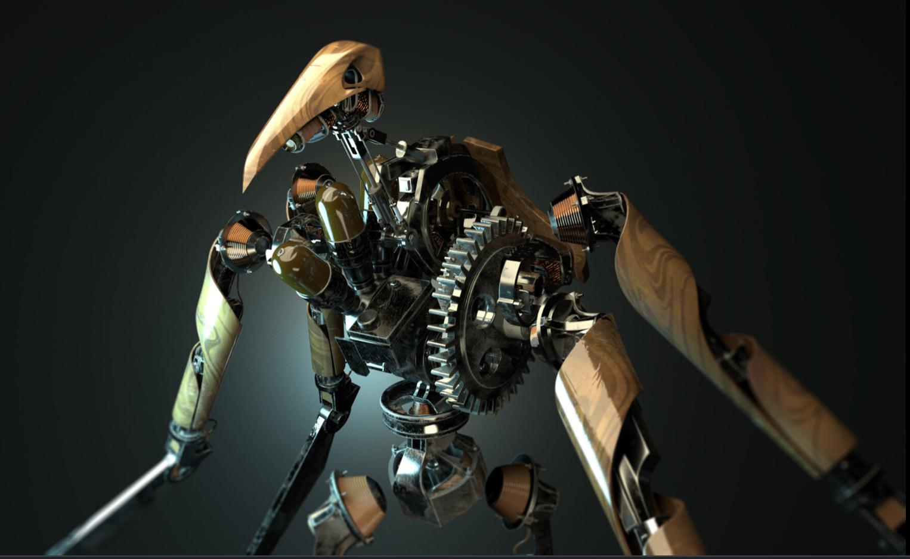

Visions of the Empire
Here is a collection of images from the archives of the Empire of the Isles. You will see the cobblestone streets of Dunwall, infested with plague rats, as well as the windswept cliffs of Karnaca. Observe the details of the mechanisms created by Anton Sokolov and Kirin Jindosh, the genius inventors who shaped our modern era thanks to whale oil. Each image tells a story, be it a silent assassination, a brutal combat, or a moment of contemplation facing the Void. The masks worn by the protagonists are not merely protection; they are the faces of vengeance and justice. Take the time to admire the Victorian architecture blended with steampunk technology that gives this universe its unique character. Dive into these settings where sunlight struggles to pierce the industrial fog, revealing the melancholic beauty of a declining civilization. Whether you are a loyal protector or a ruthless assassin, these memory fragments testify to the grandeur and decadence of the Empire, frozen for eternity.


